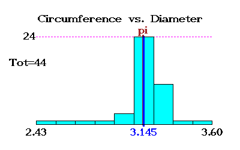

Pi Day of the Century (March 14 2015)
at Texas A&M University
3-14-15 @ 9:26:53 AM
Cumulative results of measurements of π

Supported by the
Department of Mathematics
, Texas A&M University.
Last modified: Sat Mar 14 09:26:53 CDT 2015